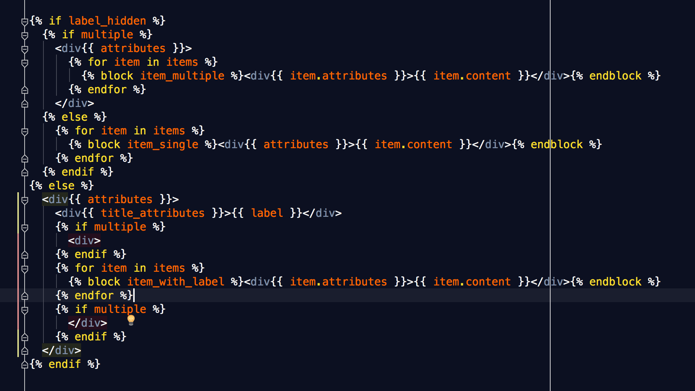

#MidCamp
Chasing The Dream of Style Guide Driven Development /
Brian Perry
Chasing The Dream of Style Guide Driven Development in Drupal 8
MidCamp 2016
#MidCamp
Brian Perry
@bricomedy / brianperry
Breakthrough Technologies
http://breaktech.com
So what exactly is Style Guide Driven Development anyway?
Decoupling of front and back end development
Theming doesn't have to come last
Perception
Reality
(Mario Kart Version)
The Living Style Guide
A Living Style Guide
- Is modular and re-usable


A Living Style Guide
- Is modular and re-usable
- Uses real world css and markup
- Is always kept up to date
- Is testable
Has this ever happened to you?

One tiny css change causes a regression deep in the outer reaches of your site
(and, it goes unnoticed for lord knows how long)

Drupal 7
Millions of years ago when Drupal 7 was a thing...
Style Guide API
hook_styleguide()
hook_styleguide_alter()


hook_styleguide()
function my_module_styleguide() {
$items = array();
$items['color_primary'] = array(
'title' => t('02-1) Colors, Primary'),
'group' => t('1) Approved'),
'content' => ''
);
$items['button_primary'] = array(
'title' => t('01-1) Buttons, Primary'),
'group' => t('1) Approved'),
'content' => markup_button_link('btn-primary', 'Donate Now')
);
return $items;
}
Custom Helpers for Markup
/**
* Link Button
*
* @param $classes
* STRING additional classes to be applied to button link
* @param $text
* STRING link text
*/
function markup_button_link($classes, $text) {
$output = '' . $text . '';
return $output;
}
Style guide also has helper functions like styleguide_lorem(), styleguide_image(), styleguide_pager()
hook_styleguide_alter()
/**
* Implements hook_styleguide_alter().
*/
function my_module_styleguide_alter(&$items) {
// Promote default styleguide items to review sections
$items['headings']['title'] = t('02-4) Headings');
$items['headings']['group'] = t('1) Approved');
$items['text']['title'] = t('02-5) Text Block');
$items['text']['group'] = t('2) In Progress');
}
Style Guide File Snippets Module
Extend style guide with snippets of markup from your codebase.
- .html format
- .inc format
.html Format
Path: SNIPPET_DIRECTORY/Navigation/Pill Navigation.html

.inc Format
Returns an array in hook_styleguide() format
<\?php
return array(
'title' => t('Pill Navigation'),
'group' => t('Navigation'),
'content' => ''
);
Drupal 8
Drupal 8 wants you to build better themes
Cleaner Markup
Base Themes
- Classy
- Stable
Clearer seperation between logic and display
{%
set classes = [
'block',
'block-' ~ configuration.provider|clean_class,
'block-' ~ plugin_id|clean_class,
]
%}
< div {{ attributes.addClass(classes) }}>
(From block.html.twig)
Tools to Create Modular, Re-usable components
CSS Coding Standards

SMACCS
- Base
- Layout
- Component (aka Module)
- State
- Theme (aka Skin)
BEM
Naming convention for components
- Block
- Element
- Modifier
.block {}
.block__element {}
.block--modifier {}
.block__element--modifier {}

Twig Extends
field.html.twig

Twig Blocks
Custom field.html.twig
Twig Extends
field--field-hero-header.html.twig

Style Guide D8 Port In-Progress
https://www.drupal.org/node/2606942
Style Guide Generators to the Rescue
Many options
- Pattern Lab
- Stylex
- KSS
KSS
- Human readable documentation syntax
- Any flavor of CSS
- Node JS implementation
- Grunt integration
Install
npm install kss --save-dev
npm install grunt-kss --save-dev
Example

KSS Syntax
// Solution Teaser
//
// A teaser for solutions taxonomy as displayed on the homepage
//
// Markup: kss_markup/solution_teaser.html
//
// Style Guide: Solutions.Teaser
.view-solutions .views-row {
.views-field-field-category-icon .col-xs-3 {
padding: 3%;
border-radius: 50%;
background-color: $gray_light;
img {
@extend .img-responsive;
}
}
}
Build Style Guide
grunt kss
or:
kss-node --source sass --destination styleguide --css css/style.css

Testing Your Style Guide and Theme
Behat
Behavior Driven Development Framework
@javascript
Scenario: Footer style matches style guide
Given I am an anonymous user
And I am on "assessments/practice-assessments"
When I am browsing using a "phone"
Then "body" should have a "background-color" css value of "rgb(112, 84, 125)"
And "#page" should have a "background-color" css value of "rgb(255, 255, 255)"
And "footer" should have a "padding-top" css value of "50px"
And "footer" should have a "padding-bottom" css value of "30px"
Wraith
Screenshot Comparison Tool


Phantom CSS
CSS Regression Testing
- PhantomJS/SlimerJS - Headless Browser
- CasperJS - Navigation and Scripting
- ResembleJS - Screenshot Comparison
Strengths: interactivity, easier to target components.
Target By Selector

casper.thenOpen(phantom.rootUrl)
.then(function() {
this.evaluate(function() {
// Evaluate any pre-test js here
});
})
.then(function() {
phantomcss.screenshot('.view-solutions .views-row:first-child', 'Solution Teaser');
});
Install
npm install phantomcss --save-dev
or:
npm install @micahgodbolt/grunt-phantomcss --save-dev
Demo
Chasing the dream?
- Stop cutting corners in workflow.
- How can we get closer to real up to date Drupal markup in Style Guide?
Questions?
MidCamp Sprint
Sunday, March 20 at 10 am
UIC COMRB 909 S. Wolcott St
(across the street from the venue)
Contributors of all skill sets and levels are welcome and encouraged to join us!
Feedback
joind.in/talk/eae91
Replace the URL with the short URL to your talk on joind.in. Go to MidCamp 2016 on joind.in and claim your talk (you will have to register and log in).